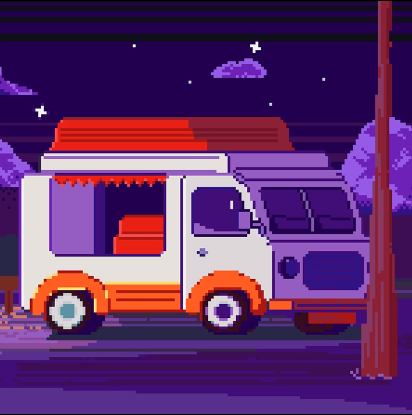

Фритрек и нулевой спринт: Подготовка к работе

</HTML>Это было самое начало пути. На этом этапе важно было проникнуться основами и настроиться на учёбу. И, возможно, подумать, как новые знания могут повлиять на ваше будущее.
Когда впервые открыл сайт курса, я не мог избавиться от любопытства и волнения. Открыв первые уроки, был приятно удивлён объёмом знаний. Я не имел ни малейшего представления о том, как я буду всё это изучать и успевать вовремя сдавать самостоятельные работы.